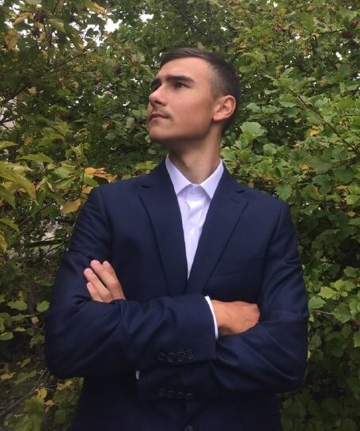
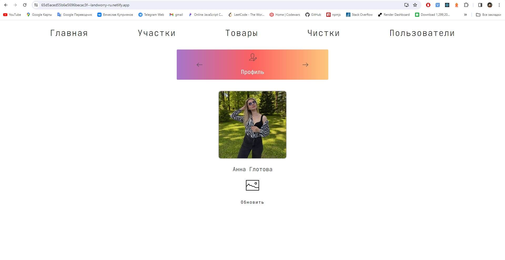

Вячеслав Куприянов
Middle Frontend/Fullstack Developer из г. Новосибирск, РоссияОпыт коммерческой разработки: 9 месяцев
IT | Велоспорт | Резьба | История | X10
Технологии и умения
Frontend: *JavaScript, *TypeScript, [React, NextJS], Redux, Context API, Unit Testing, Webpack, SSR, UI/UX.
Backend: NodeJS, [ExpressJS], *MongoDB, Mongoose, *PostgreSQL, Socket.IO, JWT, SSE, SMTP.
Template: HTML, CSS, SCSS, БЭМ, flexbox, grid.
API: Web APIs, GraphQL, Apollo, Fetch, Axios.
Tools: IDEs, GitHub, Docker, Render, Netlify, Firebase, Swagger, Lighthouse, npm, git.
Architecture: FSD, SOLID, DRY, REST API, OpenAPI 3.0, ACID, microservices, flux.
Other Libraries: wouter, styled-components, uniqid, bcrypt, js-cookie, centum.js, datus.js
Soft: добросовестность в работе, отсутствие снобизма и вредных привычек.
Проекты
Остальные проекты расположены на GitHub с их подробным описанием, стеком и нововведениями.
Коммерческий опыт
Текущий проект: Wotus.com

Образование
IT-Факты
У меня есть опыт реализации нескольких open-source библиотек на JS, которые опубликованы в npmjs. Активно занимаюсь их поддержкой и продвижением.
Помимо разработки веб-приложений, на протяжении 4 лет я программировал на платформе CodeWars. В итоге решил 150 задач, получив 5 кю.